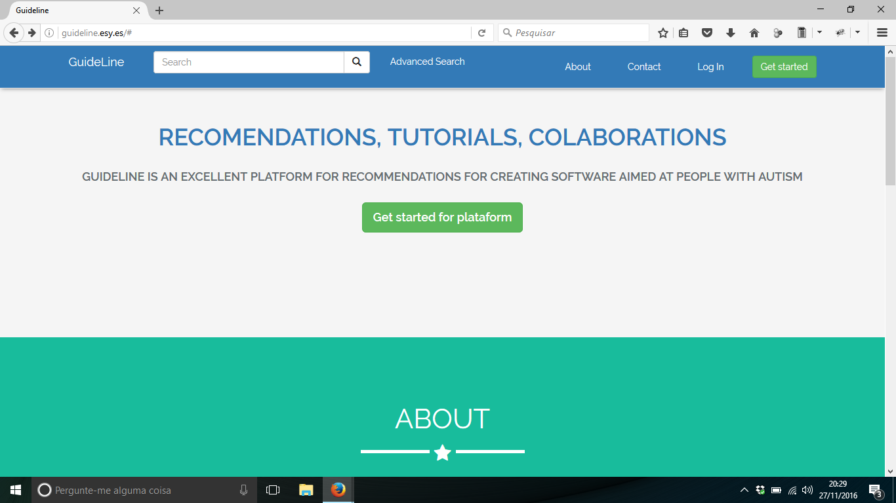
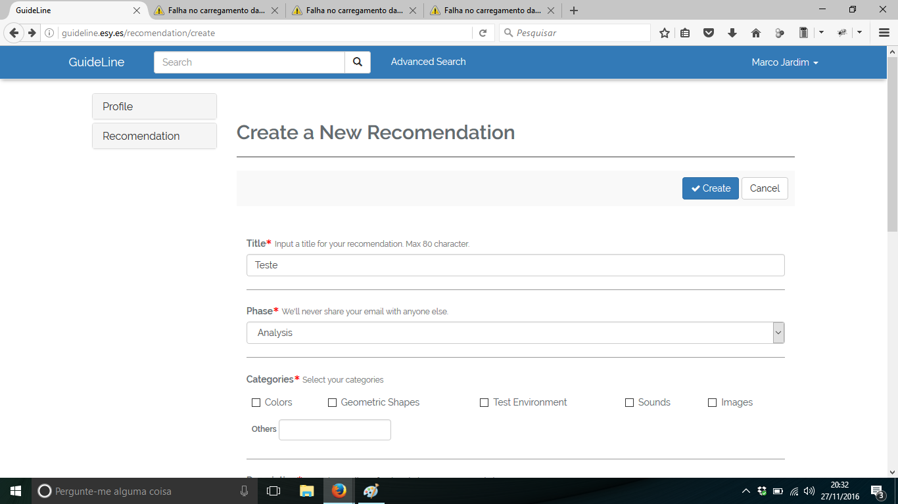
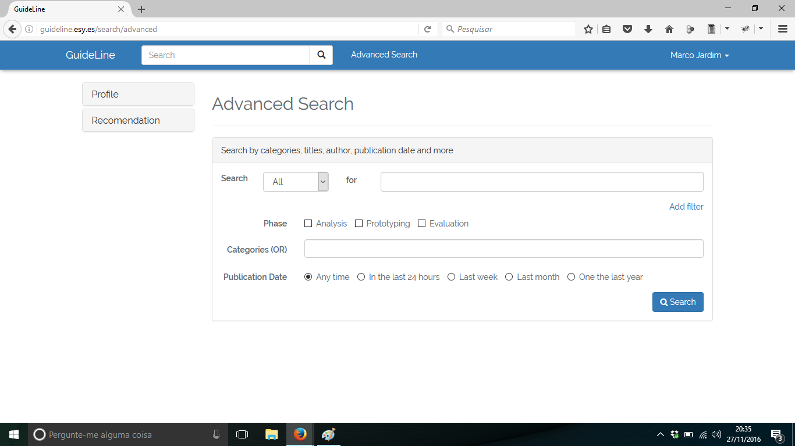
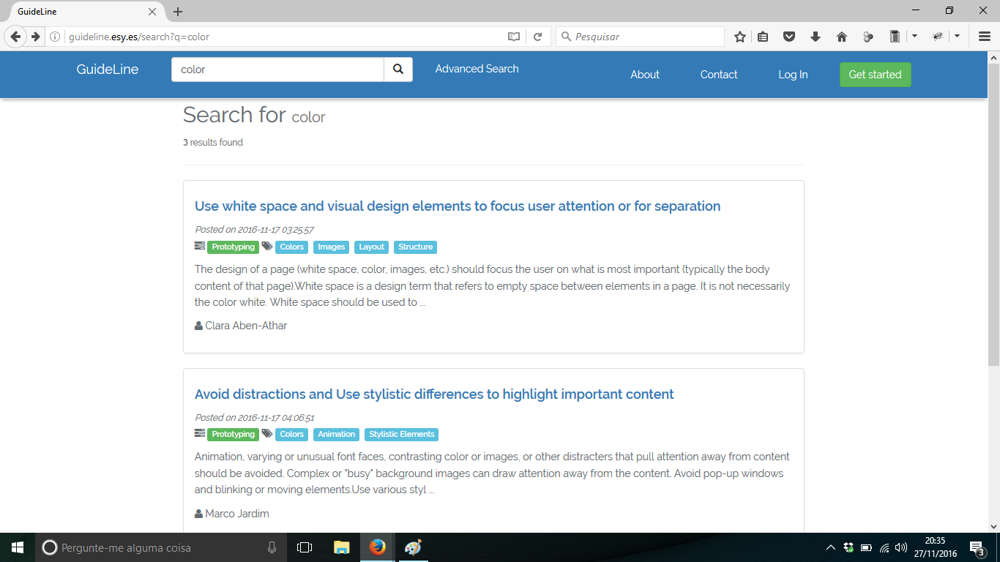

Vamos avaliar os tipos de teste de usabilidade que podem ser considerados no contexto de uma aplicação real.
Uma equipe de alunos de pós-graduação quer avaliar uma aplicação Web que fornece um conjunto de recomendações para desenvolver aplicações para usuários autistas. A aplicação será usada pela equipe de desenvolvimento para identificar as recomendações. Algumas das telas da aplicação são mostradas a seguir.
Tela Inicial

Tela de Registro de Recomendação

Tela de Busca de Recomendações

Tela de Visualização de Recomendações

Considere que a equipe que quer avaliar a aplicação não tem experiência em aplicar testes de usabilidade e que possui poucos recursos para aplicar um teste. Nesse contexto, que tipo de teste você recomendaria que eles fizessem?